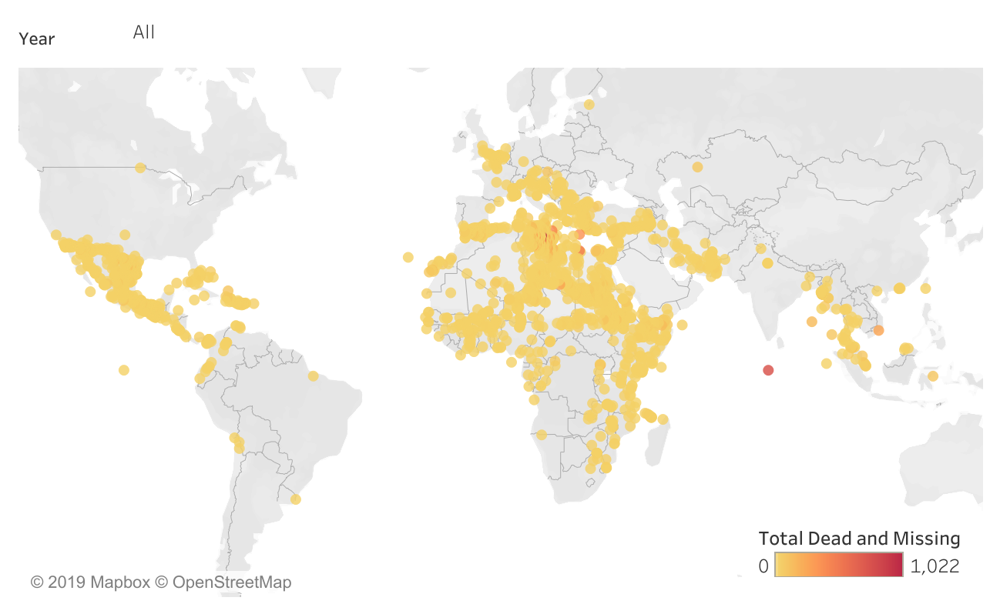
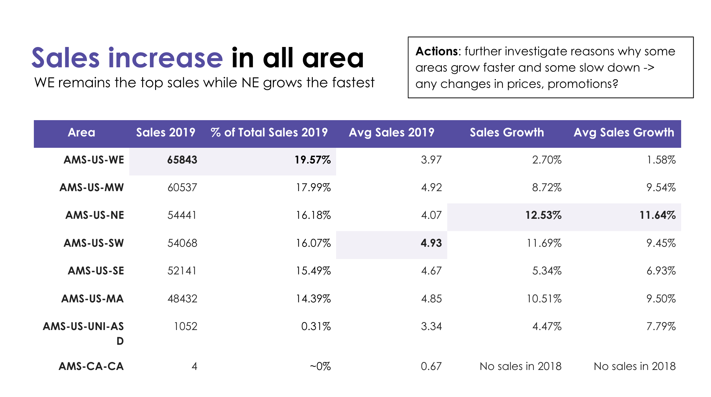
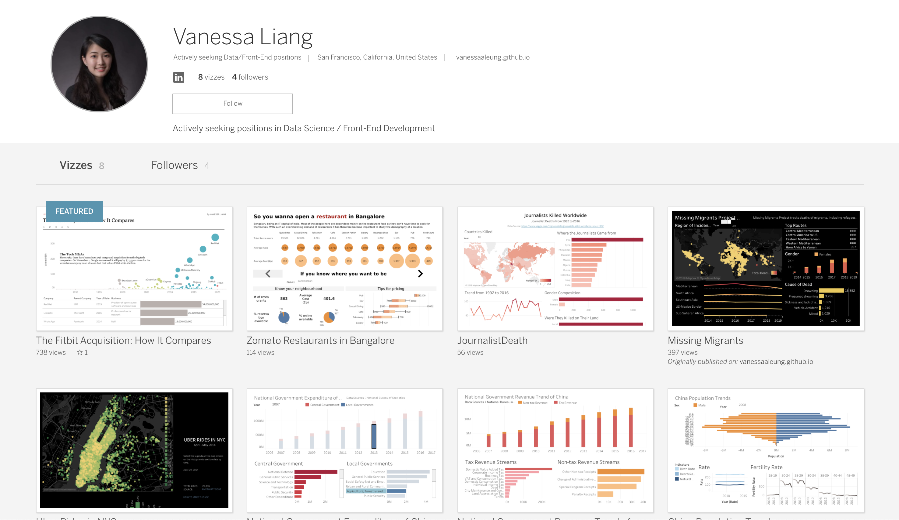
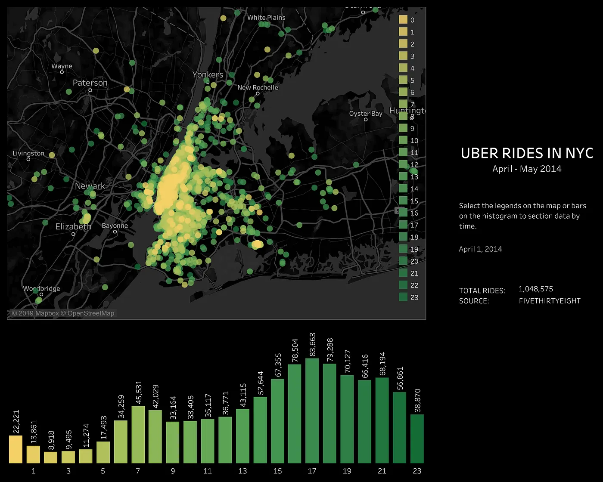
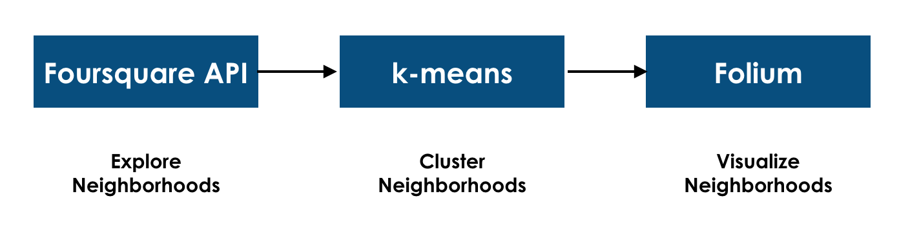

I turn messy data into clear decisions.
I’m Vanessa, a data scientist and engineer building thoughtful systems at the intersection of analytics, AI, and product.
Explore my work ↓Work across data and technology.
A collection of meaningful work across visual explanation, analytical modeling, and applied products.

Missing Migrants
An interactive visual investigation of migrant deaths and disappearances, revealing geographic patterns across routes, regions, and reported causes.
Visualization & data stories
Interactive work that makes complex subjects legible, memorable, and useful.
Analytics & machine learning
Models, databases, and analyses designed around decisions, behavior, and measurable outcomes.
Text Analytics on Venmo Transactions
↗
Product Discount Optimization
↗Association-rule Recommender System
↗ Experimentation · Retention analysisMobile Game A/B Testing
↗ Time series · Financial modelingUS Bond Yield Volatility
↗ Predictive analytics · Organizational dataEmployee Attrition Modeling
↗ Classification · Model selectionCredit Card Approval Prediction
↗ NLP · Unsupervised learningTopic Modeling Congressional Records
↗ Graph analytics · CentralityGame of Thrones Network Analysis
↗ Classification · Marketing analyticsAds Click-Through-Rate Prediction
↗ Predictive modeling · Text featuresReview Rating Prediction
↗ Financial analytics · Risk-adjusted returnsRisk and Returns: The Sharpe Ratio
↗ Database design · AnalyticsSong Popularity Analysis Database
↗Product & applied technology
End-to-end software experiments combining product thinking with hands-on implementation.
Notes on data, visualization, and building.
Practical explorations of visualization, data science, and building across technologies.
View all on Medium ↗
5 Hacky Data Visualization Techniques with Tableau
Read on Medium ↗
Data Visualization of Uber Rides with Tableau
Read on Medium ↗